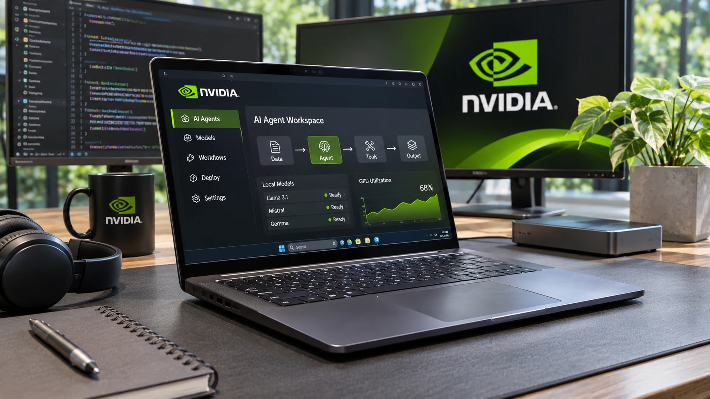

NVIDIA Expands RTX Spark Laptops With Local AI Agent Tools
NVIDIA is adding new models and agent workflows to its RTX Spark PCs, putting more AI work on laptops as its November earnings call approaches.

NVIDIA turns RTX Spark into a software story
NVIDIA expanded the local AI software tools available for its RTX Spark PCs in an October 28 update, adding support for more agent workflows and models. The announcement follows the platform's mid-October launch. The question for developers is how much work these systems can perform directly on a PC, rather than sending data and computing tasks to cloud services.
What the October 28 update actually adds
NVIDIA highlighted Nemotron 3.5 Transcribe, an open-weight speech model intended for tasks such as transcription, identifying speakers and translation. It also pointed to Liquid AI’s LFM3 models as part of the options available for local inference. These additions are relevant because voice interfaces and smaller, more efficient language models can make a personal AI system useful without every interaction requiring a large remote model. The performance, accuracy and power demands of specific workflows will still depend on model size, software optimization and device configuration.
The company also discussed additions around Hermes Agent, including NVIDIA OpenShell and Switchyard. The broader aim is to give developers more tools to build agents that can coordinate steps, call software tools and manage work locally. An agent that can read inputs, act on a sequence of instructions and return a result is a more demanding use case than a chatbot answering a single question. It raises practical questions about access permissions, reliability, memory consumption and safeguards when software can take actions on a user’s behalf.
Why unified memory matters
RTX Spark combines a Grace CPU and Blackwell RTX GPU, with up to 128GB of unified memory and a company-stated maximum of one petaflop of FP4 AI performance. These are upper-end platform claims, not guaranteed performance for every laptop or application. Unified memory can help developers keep large models and datasets accessible to the CPU and GPU, although real-world speed also depends on bandwidth, sustained power, software optimization and thermal limits.
An emerging market with clear trade-offs
The first independent assessments of RTX Spark laptops have been mixed. Reporting by The Verge described strong potential in integrated graphics and local AI while also identifying high prices, heat, fan noise, limited battery life under demanding workloads and compatibility issues for some software. Those findings do not invalidate the platform, but they underline why the AI PC category remains early. A capable workstation on a desk and an efficient all-day mobile computer are not the same product proposition, even if both use a laptop form factor.
The possible benefits are nevertheless tangible. Local processing can reduce reliance on network connections, keep certain data on the user’s hardware and avoid recurring per-request cloud inference costs. For another aspect of model deployment and control, see our coverage of publisher AI-training controls. Developers can test models, prototype agents or run transcription and coding assistants without uploading every input. Those advantages are conditional, not automatic: local security still depends on applications and permissions, and cloud services may remain better for the largest models or rapidly changing workloads.
NVIDIA reaches beyond the data center
NVIDIA’s strategy is to bring more of its AI technology stack into the personal computer. As discussed in our reporting on Google’s orbital AI experiment, the drive to distribute AI workloads spans very different computing environments. Its CUDA ecosystem already shapes how many developers work with accelerated computing. RTX Spark could extend that relationship to laptops that developers use to build, test and run applications directly. The presence of multiple major PC manufacturers gives the platform a route into enterprise and creator markets, but broad availability does not by itself establish broad demand.
Investors will also watch November earnings
NVIDIA separately announced on October 28 that it will discuss third-quarter results for fiscal 2027 on November 17, 2026, at 2 p.m. Pacific time, or 5 p.m. Eastern time. The quarter ended on October 25. The company said written commentary from Chief Financial Officer Colette Kress would be published after results are released, ahead of the call. The earnings event is distinct from the RTX Spark product update and should not be treated as evidence of specific laptop sales or financial contributions.
The next test
RTX Spark is emerging as a portable platform for local AI development, inference and autonomous agents rather than simply another premium laptop label. Its commercial prospects depend on practical tools, software compatibility, acceptable battery life and pricing. NVIDIA’s November earnings call may offer broader strategic context, but the more important evidence will come from developers and businesses using these systems consistently in real work.
Sources and methodology
Primary sources and supporting documentation.